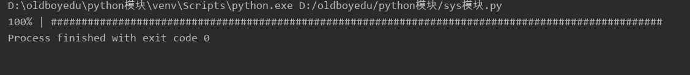

原文连接:https://www.cnblogs.com/june-L/p/11623611.html
=========================time模块===============================
作用：打印日期，做时间转换。
import time
import datetime
#示例一：sleep()
print("start to sleep.....")
time.sleep(5) #让程序停止5秒
print("wake up...")
#示例二：时间戳
print(time.time()) #返回当前系统时间戳
#示例三：输出当前系统时间
print(time.ctime()) #输出当前系统时间
#示例四：将时间戳转为字符串格式
print(time.ctime(time.time()-86400)) #将时间戳转为字符串格式
#示例五：将时间戳转换成struct_time格式
print(time.gmtime(time.time()-86400))
#示例六：将时间戳转换成struct_time格式，但返回本地时间
print(time.localtime(time.time()-86400))
#示例七：与time.localtime()功能相反，将struct_time格式转换成时间戳格式
print(time.mktime(time.localtime()))
#示例八：将struct_time格式转换成指定的字符串格式
print(time.srtftime("%Y-%m-%d %H:%M:%S", time.gmtime()))
#示例九：将字符串格式转换成struct_time格式
print(time.strptime("2019-10-01", "%Y-%m-%d"))
========================datetime模块===========================
#示例一：输出今天的日期
datetime.date.today()
#示例二：将时间戳转成日期格式
datetime.date.fromtimestamp(time.time()-86400)
#示例三：
current_time = datetime.datetime.now()
print(current_time) #输出%Y-%m-%d %H:%M:%S格式，输出结果：2019-10-04 16:35:44.065723
print(current_time.timetuple()) #返回struct_time格式
print(current_time.replace(2019,10,04)) #输出%Y-%m-%d %H:%M:%S格式，返回当前时间，但指定的值将被替换。
#示例四：将字符串转换成日期格式
str_to_date = datetime.datetime.strptime("04/10/19 16:25", "%d/%m/%y %H:%M")
#示例五：比现在加10天
new_date = datetime.datetime.now() + datetime.timedelta(days = 10)
#示例六：比现在减10天
new_date = datetime.datetime.now() + datetime.timedelta(days = -10)
#示例七：比现在减10小时
new_date = datetime.datetime.now() + datetime.timedelta(hours = 10)
#示例八：比现在加120秒
new _date = datetime.datetime.now() + datetime.timedelta(seconds = 120)
=========================sys模块==============================
import os
import sys
#示例一：命令行参数list，第一个元素是程序本身路径
sys.argv
#示例二：退出程序，正常退出时exit(0)
sys.exit(n)
#示例三：获取int最大值。
sys.maxint
#示例五：返回模块的搜索路径，初始化使用PYTHONPATH环境变量的值
sys.path
#示例六：返回操作系统平台名称
sys.platform
#示例七：向屏幕上显示信息
sys.stdout.write('hello')
#示例八：读取屏幕的输入
val = sys.stdin.readline()[:-1]
练习一：读写用户的输入，根据用户输入创建一个相应的目录。


1 import sys, os
2 dirname = input("请输入你的目录名称： ")
3 ret = os.mkdir(dirname)
练习二：模拟进度条的显示
1 import sys, time
2
3 for i in range(31):
4 sys.stdout.write('\r') #每一次清空原行
5 sys.stdout.write("%s%% | %s" % (int(i/30*100), int(i/30*100) * '#'))
6 sys.stdout.flush() #强制刷新到屏幕
7 time.sleep(0.2) #控制输出的速度进度条显示的结果：

===========================os模块==============================
示例七：获取当前工作目录，即当前python脚本工作的目录路径
os.getcwd()
#示例八：改变当前脚本工作目录，相当于shell下cd
os.chdir()
#示例九：返回当前目录（'.'）
os.curdir()
#示例十：获取当前目录的父目录字符串名('..')
os.pardir()
#示例十一：可生成多层递归目录
os.makedirs('dirname1/dirname2')
#示例十二：若目录为空，则删除，并递归到上一级目录，如若也为空，则删除，依此类推
os.removedirs('dirname1')
#示例十三：生成单级目录，相当于shell下mkdir
os.mkdir('dirname1')
#示例十四：删除单级目录，若目录不为空则无法删除，报错；相当于shell下rmdir
os.rmdir('dirname')
#示例十五：列出指定目录下的所有文件和子目录，包含隐藏文件，并以列表的方式打印
os.listdir('dirname')
#示例十六：删除一个文件
os.remove()
#示例十七：重命名文件或目录
os.rename("oldname", "newname")
#示例十八：获取文件或目录信息
os.stat('path/filename')
#示例十九：输出操作系统特定的路径分隔符，windows下为"\\"，Linux下为"/"
os.sep
#示例二十：输出当前平台使用的行终止符，windows下为"\t\n"，Linux下为"\n"
os.linesep
#示例二十一：输出用于分割文件路径的字符串
os.pathsep
#示例二十二：输出字符串指示当前使用平台，windows下为"nt"，Linux下为"posix"
os.name
#示例二十三：运行shell命令，直接显示
os.system("bash command")
#示例二十四：获取系统环境变量
os.environ
#示例二十五：返回path规范化的绝对路径
os.path.abspath(path)
============================pickle模块--序列化===============================
pickle提供了一个简单的持久化功能。可以将对象以文件的形式存放在磁盘上。
pickle模块只能在Python中使用，python中几乎所有的数据类型（列表，字典，集合，类等）都可以用pickle来序列化，
pickle序列化后的数据，可读性差，人一般无法识别。
pickle.dump(obj, file[, protocol])
序列化对象，并将结果数据流写入到文件对象中。参数protocol是序列化模式，默认值为0，表示以文本的形式序列化。protocol的值还可以是1或2，表示以二进制的形式序列化。
pickle.dumps(obj)：以字节对象形式返回封装的对象，不需要写入文件中
pickle.load(file)
反序列化对象。将文件中的数据解析为一个Python对象。
其中要注意的是，在load(file)的时候，要让python能够找到类的定义，否则会报错。
pickle.loads(bytes_object): 从字节对象中读取被封装的对象，并返回。
pickle模块可能出现三种异常：
1. PickleError：封装和拆封时出现的异常类，继承自Exception
2. PicklingError: 遇到不可封装的对象时出现的异常，继承自PickleError
3. UnPicklingError: 拆封对象过程中出现的异常，继承自PickleError
示例一：dumps功能
import pickle
data = ['aa', 'bb', 'cc']
# dumps 将数据通过特殊的形式转换为只有python语言认识的字符串
p_str = pickle.dumps(data)
print(p_str)
#结果为：
b'\x80\x03]q\x00(X\x02\x00\x00\x00aaq\x01X\x02\x00\x00\x00bbq\x02X\x02\x00\x00\x00ccq\x03e.
#示例二：loads功能
# loads 将pickle数据转换为python的数据结构
mes = pickle.loads(p_str)
print(mes)
['aa', 'bb', 'cc']
示例三： dump功能
# dump 将数据通过特殊的形式转换为只有python语言认识的字符串，并写入文件
with open('D:/tmp.txt', 'w') as f:
pickle.dump(data, f)
示例四： load功能
# load 从数据文件中读取数据，并转换为python的数据结构
with open('D:/tmp.txt', 'r') as f:
data = pickle.load(f)
============================json模块--反序列化==================================
Python的json模块，可以将字符串形式的json数据转化为字典，也可以将Python中的字典数据转化为字符串形式的json数据。
josn.loads()用于将字典、列表、元组形式的字符串，装换成相应的字典、列表、元组。
示例：
1 import josn
2
3 str = '{"desc": "invilad-citykey", "status": 1002}'
4 result = josn.loads(str)
5 print(result)
1、json字符串转为python基本数据类型
json.load / json.loads
两个方法功能类似，可选参数也相同，最大的区别在于，json.load方法接受的输入，即第一个参数，是包含json数据的文件对象，如open方法的返回对象，
json.loads接受的输入是json字符串，而非文件对象。从输入类型的区别也可以看出两者的使用场合。
可选参数包括是否需要转换整型、浮点型等数值的参数，还有一些复杂的功能，暂时没有用到，以后有机会再了解。
2、python基本数据类型转换为字符串
json.dump / json.dumps
对应于load和loads，dump的第一个参数是对象字典，第二个参数是文件对象，可以直接将转换后的json数据写入文件，dumps的第一个参数是对象字典，其余都是可选参数。dump和dumps的可选参数相同
===================python模块知识拾遗===============================
__doc__ : py文件的注释
__file__ :本身自己文件的路径
__package__ :导入的其他文件:指定所在的包,用"."分隔; 当前文件是None
__cached__ : 缓存
__name__ :如果是主文件, __name__ == "__main__",否则,等于模块名
注意:
1、主文件
调用主函数前，必须加if __name__ == "__main__":
2、__file__
将bin文件夹下的路径添加到os.path,使用当前的主文件能直接使用import t3导入t3.py文件
1 import os, sys
2 print(__file__) #获取当前文件的所在路径
3 p1 =os.path.dirname(__file__) #获取文件的上级目录路径
4 p2 = "bin"
5 new_path = os.path.join(p1, p2)
6 print(new_path)
7 sys.path.append(new_path)